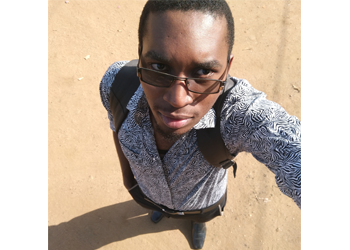

<ion-view  view-title="About">
	<ion-content class="padding">

		<div class="list card">

		  <div class="item item-avatar">
		    
		    <h2>Lawrance Massanja</h2>
		    <p>ARASMA Developer - BSc. ITS (2014 - 2017)</p>
		  </div>

		  <div class="item item-body">
		    
		    <p>
		      Project entitled <b>ARASMA</b> which stands for <b style="font-style: italic;">Academic Results Appeal and Supplementary Mobile Application</b> is a Hybrid Mobile Application with most of the features adopted from the Academic Registration Information System in Mzumbe University in addition to some features which will help in the increase of utilization of the system at large.<br/>

		    </p>
		  </div>

		</div>
	</ion-content>
</ion-view>